|
||
|
(King)  |
(Queen) 
Or, a crown dancetty of three voided vert within a wreath of roses proper.
|
West Kingdom Populace Badge 
Or and demi-sun vert.
|
|
(Prince & Princess)  |
Oerthan Populace Badge 
Fieldless, a compass star elongated to base quarterly azure and argent.
|
Barony of Winter's Gate 
Per fess indented sable, estoily argent and argent in base a laurel wreath sable.
|
 |
 |

Argent, a sea-dog rampant and in canton a laurel wreath purpure.
|
|
Khevron II Baron of Winter's Gate 
Per pale vert and sable, semy of caltrops a talbot passant argent.
|
Merewyn Baroness of Winter's Gate  |
Winter's Gate Populace Badge 
Per fess indented sable and argent an estoile counterchanged.
|
|
Badge for Standard  Per fess indented sable, estoilly argent, and argent. |
Badge for the Order of the Gilded Lily 
Sable, a lily blossom Or. |
Badge for the Order of the Estoile 
Sable, an estoile voided and a bordure argent.
|
 |
||
|
Anne FitzRichard 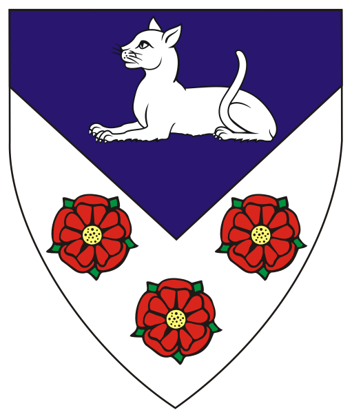
Per chevron inverted azure and argent, a cat couchant argent and three roses proper.
|
Bragi Flokason 
Per bend embattled purpure and argent crusily couped azure, on a flame argent a heart gules.
|
Bran Sparrowhawk 
Vert, a bend sable fimbriated argent, overall a talbot rampant contourny maintaining a mug Or.
|
|
Cempestrae of Winter's Gate 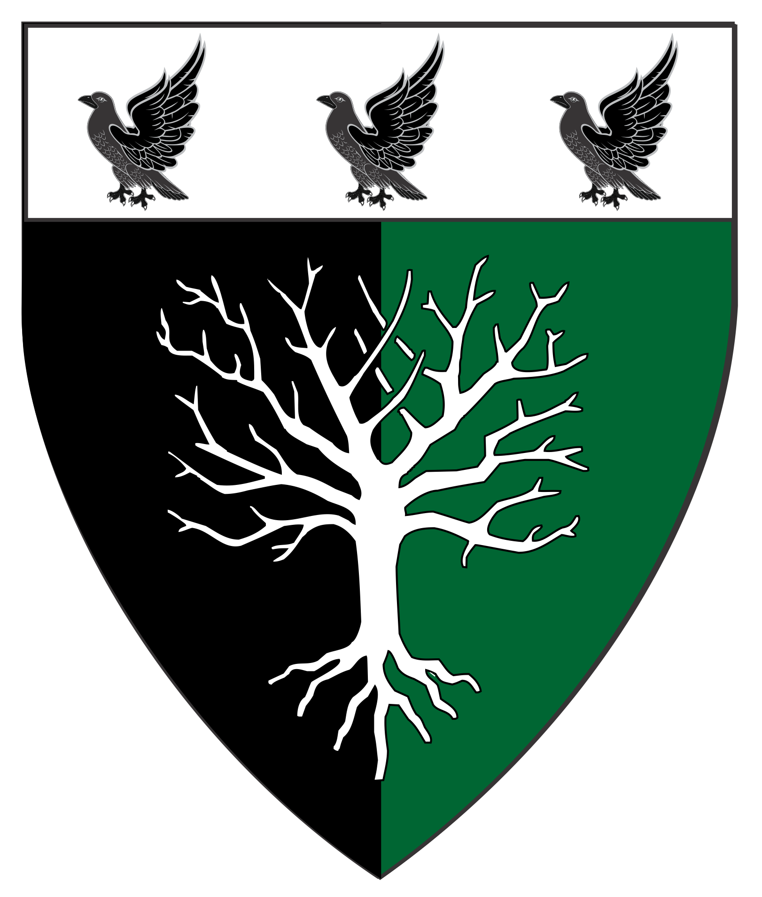
Per pale sable and vert, a tree blasted and eradicated, on a chief argent three ravens rising sable.
|
Conall Ó Coiligh 
Azure, issuant from a fess wavy argent, a demi-sun Or.
|
Elena verch Rhys 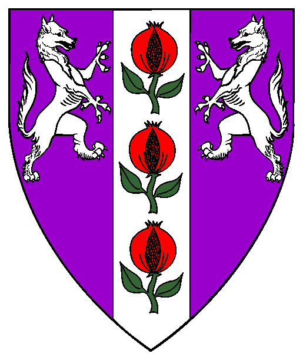
Purpure, on a pale between two enfields combattant argent three pomegranates gules slipped and leaved vert. |
|
Fearghus mac Gyllfynnan 
Gules, a bend and in sinister canton a Maltese cross argent.
|
Fionnghuala inghean Raghnaill 
Argent crusilly fitchy, a tower purpure.
|
Flóki inn írski 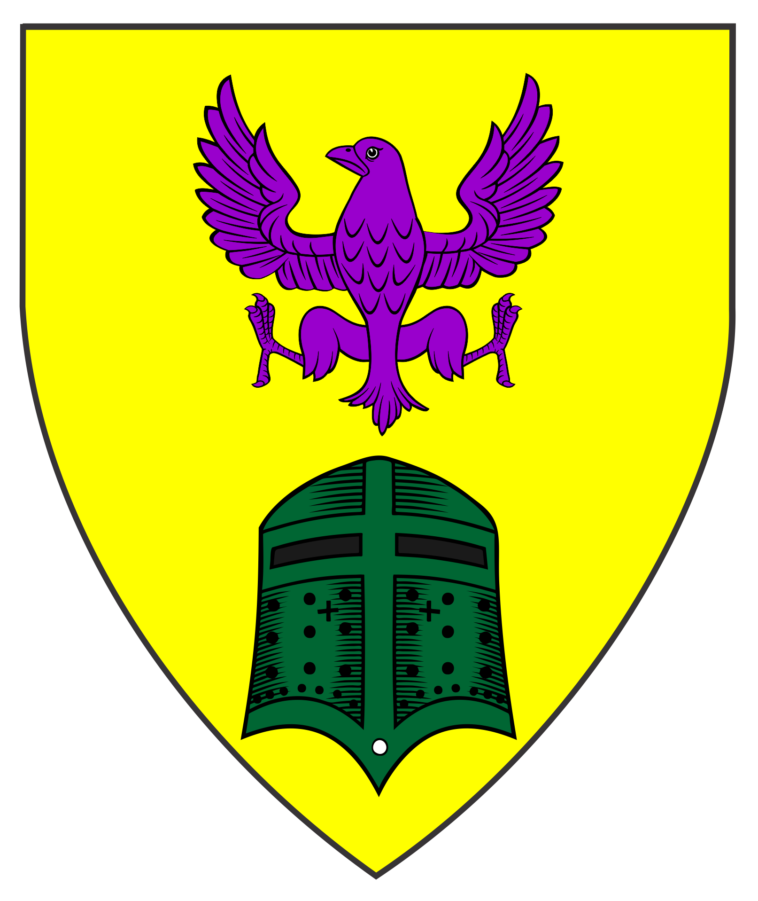
Or, in pale a raven displayed purpure and a helmet affronty vert.
|
|
Gisla Ǫðikollr 
Argent, in pale a domestic cat sejant vert and an anvil sable.
|
 |
Hallbiǫrn Erlændr 
Per chevron vert crusilly Or and Or.
|

Per chevron throughout sable and vert, two ravens respectant
and a three headed dog rampant contourny argent. |
Iriniia Myshkinova 
Per bend embattled plumetty Or and purpure and argent, in base a peacock's feather bendwise azure.
|
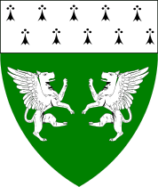
Vert, two winged mastiffs combattant argent and a chief ermine.
|
 |

Per chevron ploye sable and gules, two musimons combatant
and a Norse sun-cross argent. |
Khevron Oktavii Tikhikovich Vorotnikov
Per pale vert and sable, semy of caltrops a talbot passant argent.
|
|
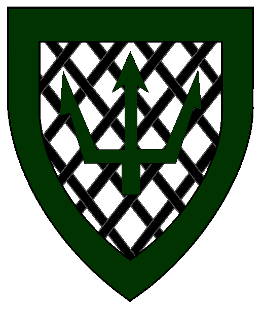 |
 |
 |

Per pall inverted vert, azure, and sable,
a pall inverted and in dexter chief a unicorn salient argent, winged Or.
|
 |
(Baroness Winter's Gate)  |
 |
"Raiden" 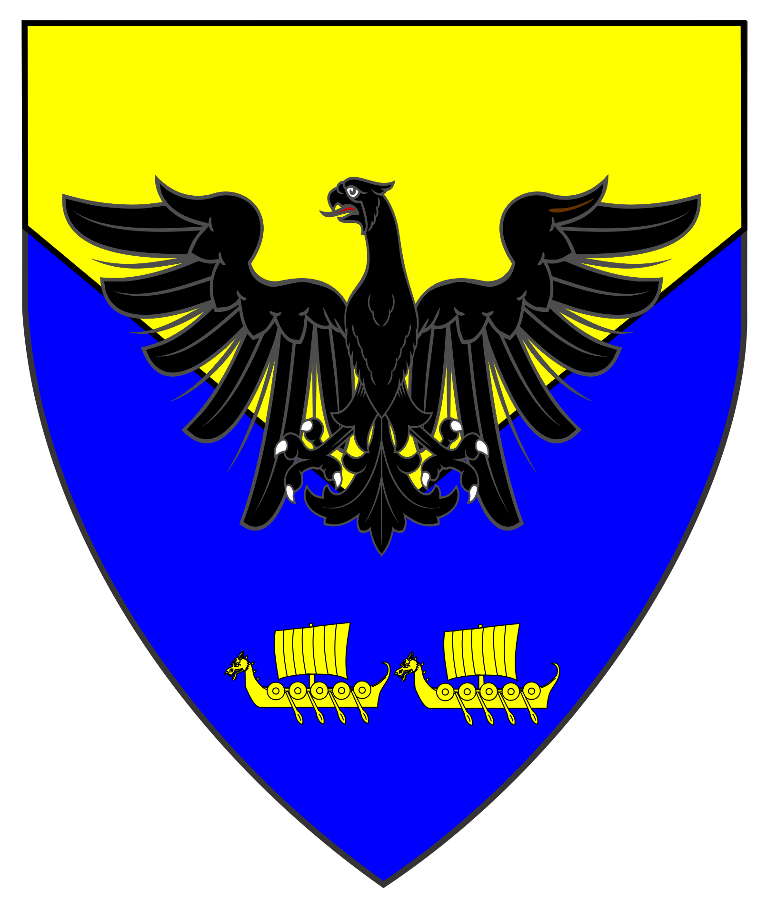 |
 |
|
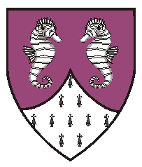 and a point pointed ermine. |
||
| |||
 |
||
|
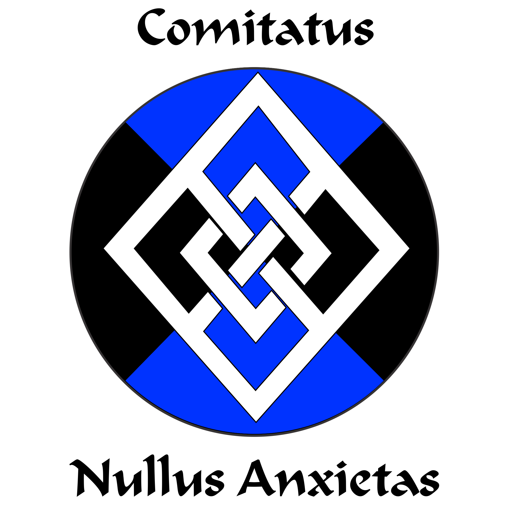
Per saltire azure and sable,
a fret within and conjoined to a mascle argent.
|
House de Montfort 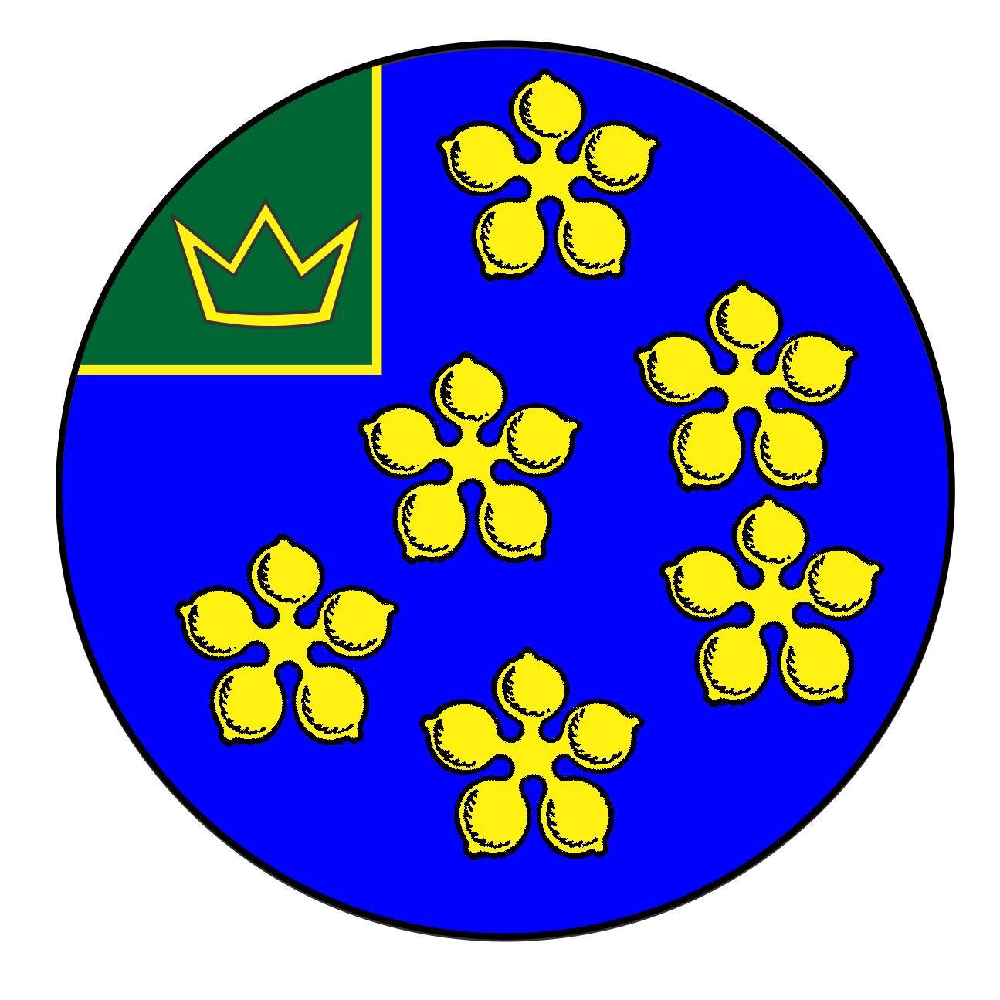
Azure semy of cinquefoils Or. As Augmentation as a Pillar of the West:
On a canton vert, a crown dancetty of three points, voided Or. |
House Shadowood 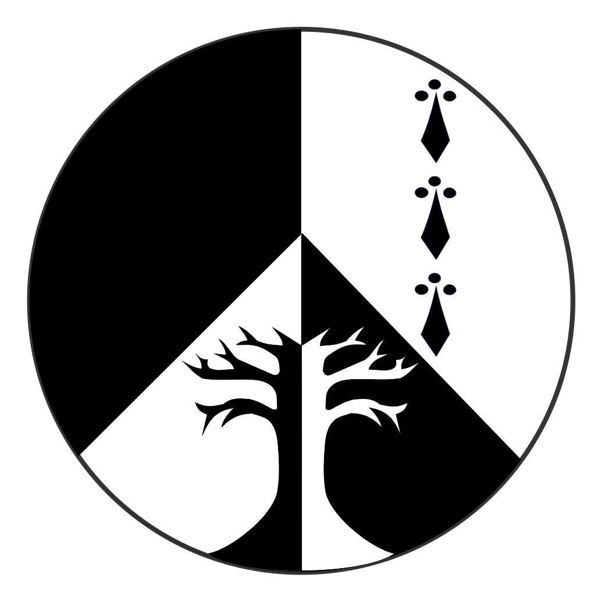
Per pale and per chevron sable and argent, in sinister chief in pale three ermine spots, and issuant from base a blasted tree counterchanged.
|
|
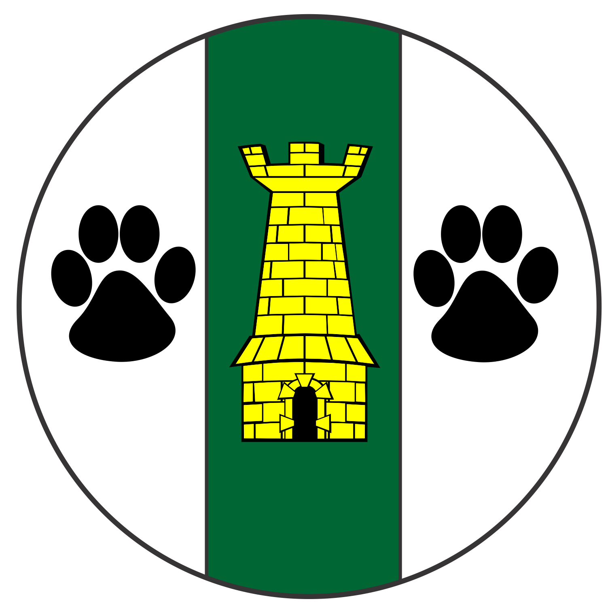
Argent, on a pale vert between two paw prints sable a tower Or.
|
||
 |
||
|
Alicianne de Montfort of Sprucewood (deceased) 
Or, a fir tree couped proper between in fess two mullets of four points elongated palewise azure.
|
Berengaria de Montfort de Carcassonne (deceased) 
Azure, three snowflakes in bend within a double tressure Or.
|
(deceased) 
Vair, a griffin segreant gules, a chief argent.
|
|
(deceased)  Per fess azure and argent, a European Brown Bear [Ursus horribulus Europus] statant erect proper, grasping in its dexter forepaw a sword argent, hilted sable. |
(deceased) 
Purpure, a sea-goat and on a chief argent a thistle between two cinquefoils purpure.
| |
|
 |
||
|
Áine inghean Culain 
Vert, a serpent nowed and on a chief argent three roses sable.
|
Amalric de Montfort 
Azure, five mullets of four points in annulo Or within a bordure dovetailed ermine.
|
Anna Zen 
Per chevron azure and purpure, a chevron between 2 bears sejant respectant Or and a peach tree couped argent fructed Or.
|
|
Annora de Montfort of Shadowood 
Per saltire vert and argent, in saltire four dragonflies displayed, heads outwards, counterchanged.
|
Ateno of Annun Ridge 
Argent, a bend sinister cotised gules between a domestic cat rampant to sinister and a wolf's head erased sable.
|
Bartram Sinclair 
Per pale sable and argent, a chevron inverted between a rose and two ravens close addorsed counterchanged.
|
|
Bianca Rose Byrne 
Or, two chevronels gules between three ravens sable, a bordure embattled gules.
|
Blaxio Zen 
Sable, a pall voided Or between a peach tree argent fructed and two wyverns sejant respectant Or.
|
Brigit de Montfort 
Vert, on a bend sinister between a balance and a cinquefoil Or, a frog courant to sinister vert.
|
|
CaitrÃona inghean ui Chionaodha (aka Amber) 
Per fess azure and vert, on a fess wavy argent, a feather reversed sable.
|
Cera inigena Corbbi 
Azure estoilly, a wolf's head erased argent.
|
Ceara inghean Alcan 
Azure, in chief a narwhal naiant argent, a bordure argent estoilly azure.
|
|
Culann Mac Cianain 
Sable, a fess checky azure and argent between four boars passant contourny argent.
|
Danpira Snowsong of Skyhaven 
Per saltire argent and gules, on a lozenge counterchanged a leopard's face jessant-de-lys Or.
|

Per pall gules, sable and argent, in base two demi-wolves courant addorsed counterchanged.
|
|
Edmund de Montfort of Highkeep 
Per bend sinister azure and gules, a bear's paw print Or and a tower argent.
|
Emelisse de Loupey 
Vert, two ivy leaves and on a pale argent a bumblebee sable marked Or.
|
Eleanor of Ynys Taltraeth 
Per pale argent and vert, a serpent nowed and a chief dovetailed counterchanged.
|
|
Eoin MacLaren 
Per saltire ermine and purpure, an equal-armed Celtic cross flory Or.
|
Étaín O'Rowarke 
Per pale vert and argent, on a chess rook a shamrock counterchanged.
|
Fathir von Trier (Rodrigo) 
Argent, a chevron purpure between two crosses formy and a reremouse sable.
|
|
Grimr af Vargeyjum 
Or, a celtic cross formy throughout sable, a bordure sable platy.
|
Gwyneth Rhiannon of the Sea 
Argent, on a cartouche purpure a dragonfly argent.
|

Azure, two hawks respectant and a double-bitted axe
inverted within a bordure dovetailed argent.
|
|
Hirsch von Henford 
Per pale Or and vert, two stag's heads erased respectant counterchanged.
|
Ii Saburou Katsumori (aka Godric) 
Argent, a Japanese well frame crosswise between four crescents in cross horns inwards conjoined gules.
|

Sable, a python displayed Or, winged argent, issuant from the head a plume, in chief a mullet of seven points Or, voided azure.
|
|
Kareina Talvi Tytär 
Azure, vetû, a long-haired domestic cat dormant argent.
|
Karl von Montfort 
Vert ermined, three piles in point argent each charged with a mug reversed sable.
|
 |
|
Katriona Gwen Fergus 
Vert, on a saltire gules fimbriated argent a garden rosebud bendwise sinister argent, slipped and leaved vert, all within a bordure argent.
|
Kenric Maur 
Per chevron argent and Or, a chevron ployé gules between two ravens addorsed reguardant and a Thor's hammer sable.
|
Larentius VonSilenen 
Sable, a saltire irradiated Or.
|
 |
Makedonii Dmitrii Aleksievich Kolchin (aka Dmitrii de Montfort) 
Per pale argent and gules, five ducks naiant to sinister in annulo counterchanged.
|
 |
|
Michael, Younger of An Alltan 
Per bend azure and argent, a cross moline gules, overall a claymore bendwise proper, in chief a label throughout counterchanged.
|
 |
Rachael d'Amour 
Per pale and per saltire argent and sable, six hearts in annulo counterchanged.
|
|
Robert Cornelius MacGregor 
Gules, a cross of Jerusalem, on a chief embattled argent three crosses of Jerusalem gules.
|
 |

Per pale azure and argent, a fig leaf counterchanged.
|
|
Sefa Hrafnsdóttir (aka Elisheva bint Sitt al-Sirr) 
Sable, three roses in pale and a gore Or.
|

Per saltire wavy argent and sable, two swans naiant contourny sable.
|
Sighni Ivarsdotter (fka Giuliana di Benedetto Falconieri) 
Per fess argent and paly gules and argent, a fess gules and in chief an estoille between two fleurs-de-lys gules.
|
|
Tama Katerina Evstokh'eva (aka Tamitsa) 
Argent, three chevronels braced azure, in chief a natural seahorse vert.
|

Per fess sable and argent, two estoiles and an eagle's head erased counterchanged, a bordure azure.
|
Targan de Montfort of Crystal Caverns 
Per fess Or and purpure, in chief two pairs of arrows in saltire sable and in base eight lozenges in annulo, points to center, Or.
|
|
Úlfhildr Sverradóttir 
Argent, a saltire azure surmounted by a ram's head cabossed sable, a bordure azure platy.
|
Wolf Federweiss 
Or, a bar gemel enhanced gules between a quill fesswise reversed and three gouttes azure.
|
|
|
If I've misses anyone, please let me know.
Seems we start 'em, train them, and they go forth and make good!
|
Principality of Oertha Armorial and Order of Precedence or the West Kingdom Roll of Arms |

To the Barony of Winter's Gate
To the Cantref Ynys Taltraeth